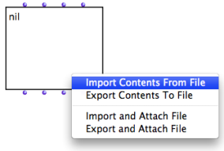
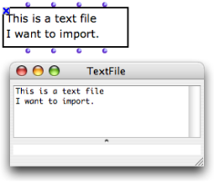
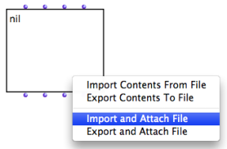
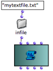
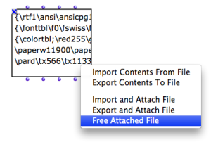
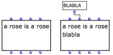
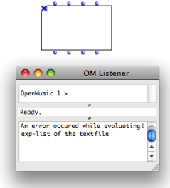

TextFile and Outer Environment
Importing / Exporting Contents
The contents of textfile can be imported or exported from / to a file on the disk.
 | To import or export a contents :
|
The imported file appears in the textfile box and in the buffer. |  |
To import contents from an external file to the open text editor, select
File / Import From...To export contents, select
File / Savec As...
External File Attachment
Other options allow to attach the object permanently to an external file on the disk .
 |
These option are alike "Import" and "Export" options, but they link the content of the object with a file on the hard drive of the computer. |
To initialize a textfile with a file :
The textfile is then attached to the corresponding file. |  Connecting a pathname to TextFile |
When a box returns a pathname, this pathname can be visualized via a textfile box.
To remove a link to a file, select This option is only available if the textfile is already attached to a file. Once the attached file is is "freed", the contents of the textfile is internalized in the patch. |  |
File Modification
 Inputting data via "exp-list" on append mode. | To modify an attached file :
When the object is saved, the related file on the hard drive is modified as well. |
 The attached file has been deleted. The Listener displays an error message. | Contrary to the "import" and "export" options, the
|